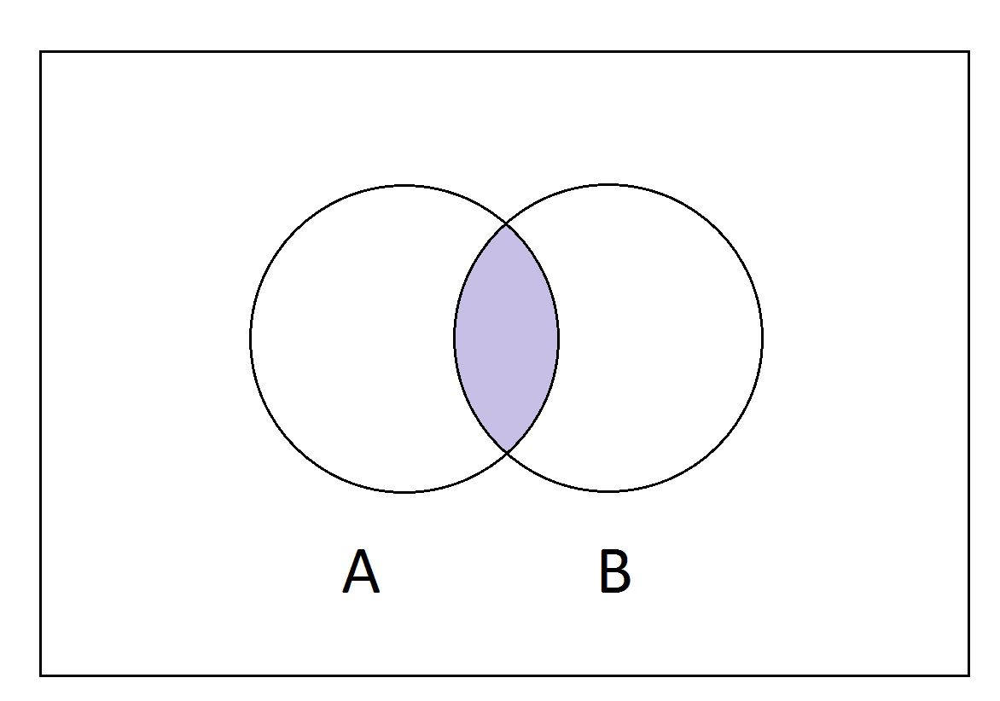

Set Theory
What is Set?
A set is a collection of well defined and different objects.
Some standard sets
- N : Set of all natural numbers.
- W : Set of all whole numbers.
- I or Z : Set of all integers.
- Q : Set of all rational numbers.
- R : Set of all real numbers.
Methods of Designating a set
- Tabular, Roaster or Enumeration Method : represent a set by listing all elements. For e.g. A = {a,e,i,o,u}.
- Selector, Set-builder or Rule Method : represented by specifyiung the defining property. For e.g. A = {x : x is a vowel in English alphabets}.
Types of Sets
- Finite Set : finite number of elements.
- Infinite Set : infinite number of elements.
- Singleton/Unit Set : set with only one element.
- Empty/Null/Void Set : set with no elements and is denoted by {} or φ .
- Subset : If every element of A is in B then A is subset of B and it is denoted as A ⊂ B.
- Superset : If every element of A is in B then B is superset of A and it is denoted as B ⊃ A.
- Proper Set : A ⊂ B and A ≠ B.
φ and A are called improper subsets of A.
- Power Set : set of all subsets.
- Universal Set : set of all elements.
or
if all the sets are subsets of U then U is a universal set.
Important Terms
- Comparable Set : if one of the two sets is a subset of the other then they are comparable sets.
- Equality of Sets : A ⊂ B and B ⊂ A or if boths sets have the same elements. It is denoted as A = B.
- Non Comparable Set : if no set of the two sets is a subset of the other then they are non comparable sets.
- Order of a Finite Set : number of different elements of a finite set and is denoted by O(set_name). For e.g O(A) = 4;.
- Cardinality : Number of different elements in a set.
- Equivalent Sets : if O(A) = O(B) then both are equivalent.
Venn Diagrams
A Venn diagram is a diagrammatic representation of sets where each set is represented by a circle.
Operations on Sets
- Union of Sets : The union of two sets A and B is the set of elements which are in A, in B, or in both A and B. It is denoted by A ∪ B.
- Intersection of Sets : The intersection of two sets A and B is the set of elements which are in both A and B. It is denoted by A ∩ B.

- Difference of Sets : The difference of the set B from the set A is the set of all elements that are in A but not in B. It is denoted by A - B or A\B.
- Complement of a Set : The complement of a set A refers to elements not in A. It is denoted by A' or A̅.
Fundamental Laws of Set Theory
| Law |
Definition |
| Identity Law |
A ∪ φ = A A ∩ U = A |
| Domination Law |
A ∩ φ = φ A ∪ U = U |
| Idempotent Law |
A ∪ A = A A ∩ A = A |
| Complementation Law |
(A')' = A |
| Commutative Law |
A ∪ B = B ∪ A A ∩ B = B ∩ A |
| Associative Law |
(A ∪ B) ∪ C = A ∪ (B ∪ C) (A ∩ B) ∩ C = A ∩ (B ∩ C) |
| Distributive Law |
A ∪ (B ∩ C) = (A ∪ B) ∩ (A ∪ C) A ∩ (B ∪ C) = (A ∩ B) ∪ (A ∩ C) |
| De Morgan's Law |
(A ∪ B)' = A' ∩ B' (A ∩ B)' = A' ∪ B' |
| Absorption Law |
A ∪ (A ∩ B) = A A ∩ (A ∪ B) = A |
| Complement Law |
A ∩ A' = φ A ∪ A' = U |
Inclusion - Exclusion Principle
Number of elements of a finite set A is denoted by n(A).
Following results of number of elements should be kept in mind for doing problems :
- n(A ⋃ B) = n(A) + n(B) - n(A ⋂ B)
- n(A ⋃ B) = n(A) + n(B) if A, B are disjoint sets.
- n(A ⋃ B) = n(A-B) + n(B-A) - n(A ⋂ B)
- n(A) = n(A-B) + n(A ⋂ B)
- n(B) = n(B-A) + n(A ⋂ B)
- n(A ⋃ B ⋃ C) = n(A) + n(B) + n(C) - n(A ⋂ B) - n(A ⋂ C) - n(B ⋂ C) + n(A ⋂ B ⋂ C)
- n(A' ⋃ B') = n((A ⋂ B)') = n(U) - n(A ⋂ B)
- n(A' ⋂ B') = n((A ⋃ B)') = n(U) - n(A ⋃ B)
- n(A ⋂ B' ⋂ C') = n(A) - n(A ⋂ B) - n(A ⋂ C) + n(A ⋂ B ⋂ C)
Cartesian Product of Sets
The Cartesian product of two sets A and B, denoted by A x B, is the set of all ordered pairs (a, b) where a is in A and b is in B.
For example, if A = {1, 2} and B = {a, b}, then A x B = {(1, a), (1, b), (2, a), (2, b)}.
Partitions of Sets
Minimum Set/Minset/Minterm
A minset of a set A with respect to a set function f is a subset B of A such that for every subset C of A, if f(B) = f(C), then B is a subset of C.
Maximum Set/Maxset/Maxterm
A maxset of a set A with respect to a set function f is a subset B of A such that for every subset C of A, if f(B) = f(C), then C is a subset of B.